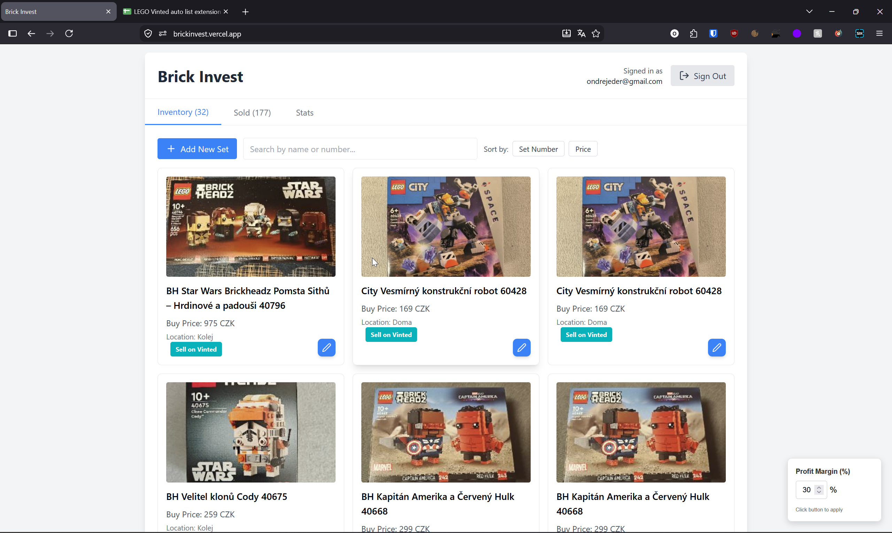
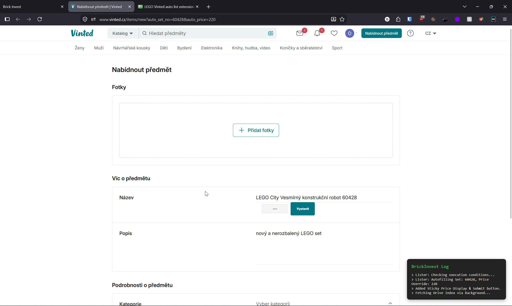
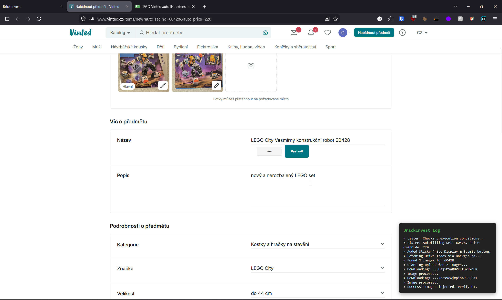
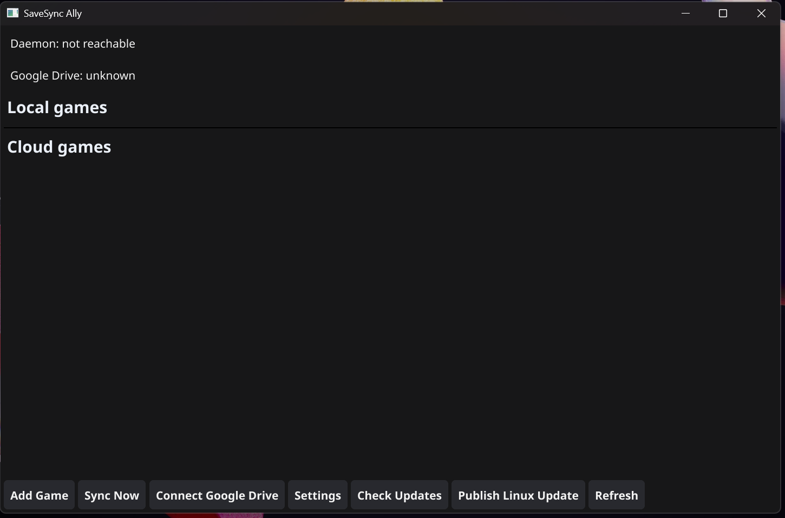
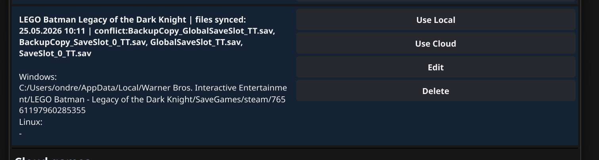
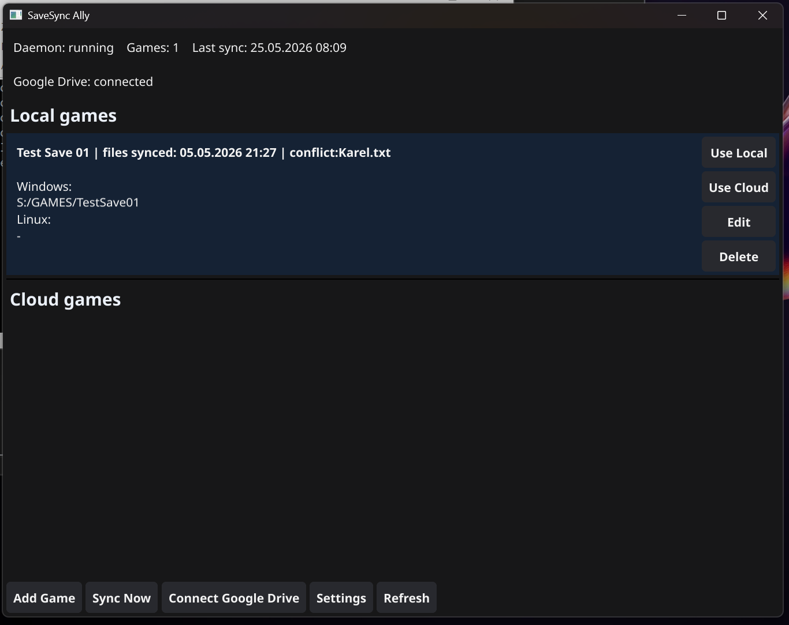

Portfolio
Ing. Ondřej Eder
Software Developer Automation, AI & C#
Softwarový vývojář se zkušenostmi s C#, Pythonem, JavaScriptem, automatizací procesů a tvorbou vlastních aplikací. Zaměřuji se na praktické využití AI a automatizace, integraci služeb a vývoj nástrojů od prototypu až po funkční řešení.
Technický přehled
Technologie
Vývoj
Automatizace & AI
Cloud / Integrace
Vybraná práce
Projekty



01
Vinted Listing Automation
Webová aplikace a automatizační workflow pro správu položek a efektivnější tvorbu Vinted inzerátů podle ID LEGO setu.
Problém
Ruční vytváření většího množství Vinted inzerátů bylo repetitivní a časově náročné.
Řešení
Vytvořil jsem vlastní React aplikaci pro správu položek a JavaScript automatizaci, která podle ID LEGO setu pracuje s daty z Google Sheets a automatizuje vyplnění Vinted listingu.
Moje práce
Návrh workflow, React frontend, propojení s Firebase a Google Sheets, deployment na Vercel a JavaScript automatizace pro Vinted.
Ukázka bude doplněna
02
SAP / Power Automate Automation
Automatizace hromadné aktualizace vícejazyčných produktových popisů v SAP z dat připravených v Excelu.
Problém
Ruční aktualizace popisů v SAP vyžadovala opakování stejného workflow pro stovky až nižší tisíce produktů.
Řešení
Automatizace vytvořená v Power Automate načítá ID a texty z Excelu, ovládá SAP GUI, otevře správnou operaci, vloží oba jazykové popisy a změny uloží.
Moje práce
Návrh a implementace automatizačního workflow, mapování dat z Excelu a automatizace jednotlivých kroků v SAP.



03
SaveSync Ally
Multiplatformní aplikace pro automatickou synchronizaci herních save souborů mezi Windows a Linux/Bazzite zařízeními prostřednictvím Google Drive. Obsahuje nativní GUI a background synchronizační službu.
Problém
Herní save soubory bez podpory Steam Cloud se mezi Windows PC a Linux handheldem automaticky nesynchronizují.
Řešení
Vlastní synchronizační systém sleduje změny souborů pomocí fsnotify a synchronizuje data prostřednictvím Google Drive API. Lokální konfigurace a metadata synchronizace jsou ukládána v JSON souborech.
Moje práce
Návrh a implementace aplikace v Go, GUI ve Fyne, OAuth autentizace, Google Drive backend, background daemon/service a build, instalační a update skripty pro Windows a Linux.


04
Fish Detection App
Aplikace využívající vlastní vytrénovaný model k detekci ryb na fotografii a určení jejich počtu a velikosti. Webové rozhraní je nasazené na Hugging Face.
Moje práce
Příprava detekčního řešení v Pythonu, práce s modelem počítačového vidění, zpracování výsledků a nasazení aplikace.


05
Build your (V)Rig
Výuková VR aplikace pro standalone headsety Meta Quest, která simuluje sestavení počítače pomocí vlastního interakčního systému, tutoriálu a lokalizace do více jazyků.
Moje práce
Návrh a vývoj celé aplikace v Unity a C#, VR interakce, výukový průchod, lokalizace a příprava standalone buildu.


06
OctoBlast
Casual mobilní hra pro Android. Kompletní vývoj od návrhu gameplay mechanik přes implementaci a monetizaci až po vydání na Google Play. Hra je dnes již delistovaná.
Moje práce
Návrh a realizace celého produktu v Unity a C#, herní mechaniky, Android build, integrace monetizace a příprava vydání.
Kontakt
Pojďme se spojit
Zajímá vás některý z projektů nebo možná spolupráce? Napište mi e-mail nebo se podívejte na můj GitHub.